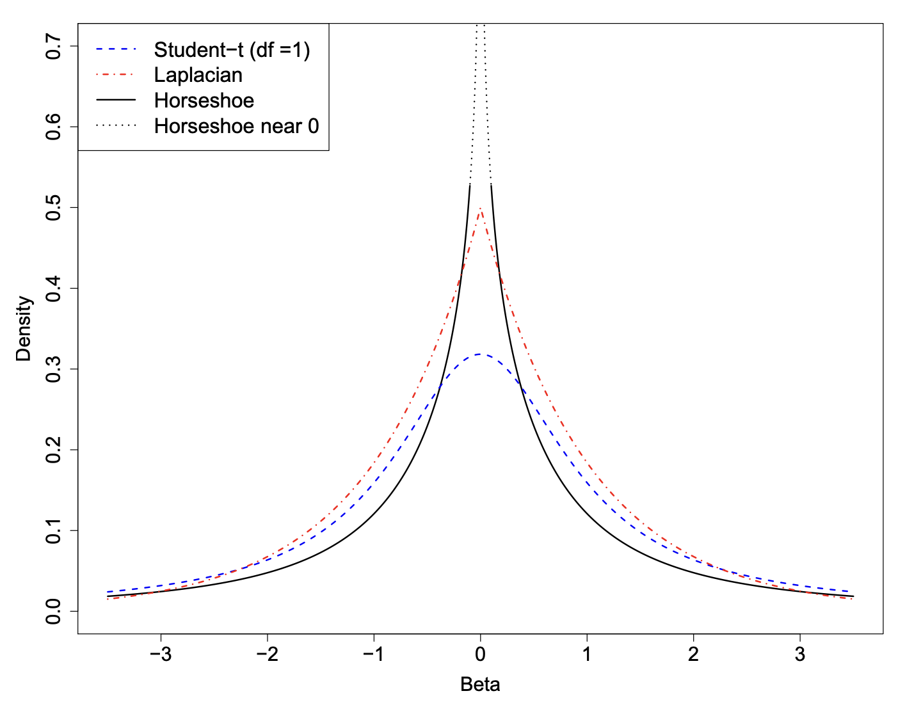
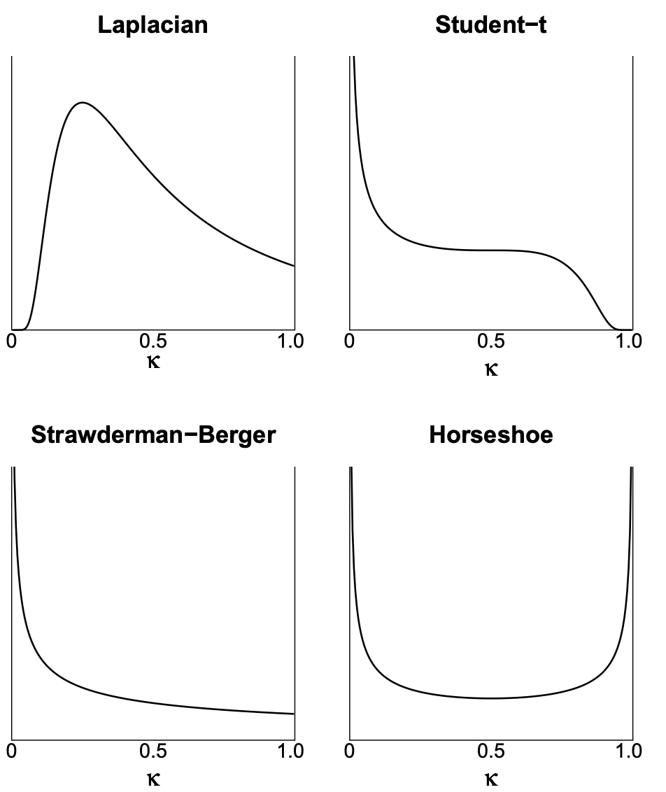
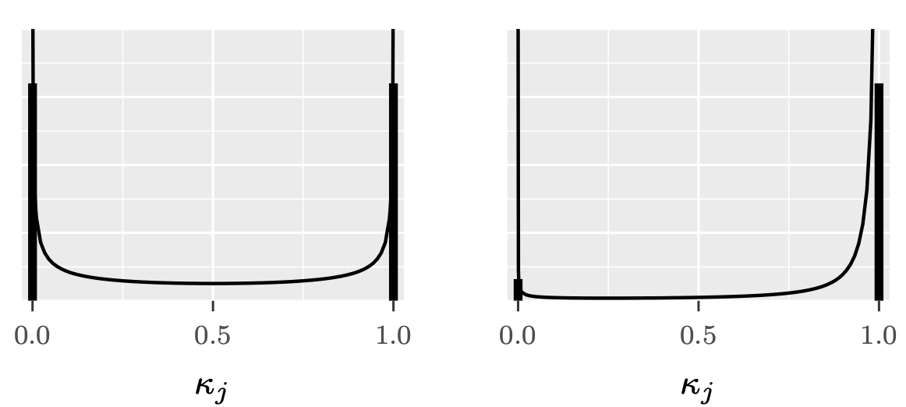
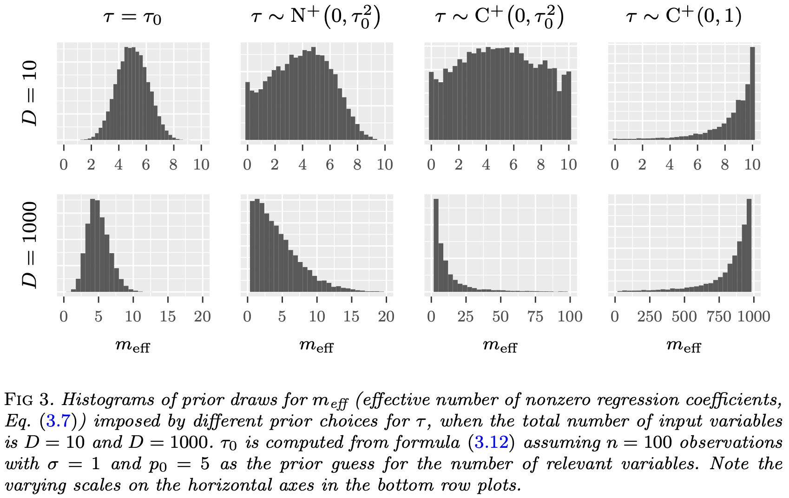

Regularization
Feb 12, 2026
Review of last lecture
On Tuesday, we learned about robust regression.
Heteroskedasticity
Heavy-tailed distributions
Median regression
These were all models for the observed data \(Y_i\).
Today, we will focus on prior specifications for \(\boldsymbol{\beta}\).
Sparsity in regression problems
Supervised learning can be cast as the problem of estimating a set of coefficients \(\boldsymbol{\beta} = \{\beta_j\}_{j=1}^{p}\) that determines some functional relationship between a set of \(\{x_{ij}\}_{j = 1}^p\) and a target variable \(Y_i\).
This is a central focus of statistics and machine learning.
Challenges arise in “large-\(p\)” problems where, in order to avoid overly complex models that predict poorly, some form of dimension reduction is needed.
Finding a sparse solution, where some \(\beta_j\) are zero, is desirable.
Bayesian sparse estimation
From a Bayesian-learning perspective, there are two main sparse-estimation alternatives: discrete mixtures and shrinkage priors.
Discrete mixtures have been very popular, with the spike-and-slab prior being the gold standard.
- Easy to force \(\beta_j\) to exactly zero, but require discrete parameter specification.
Shrinkage priors force \(\beta_j\) to zero using regularization, but struggle to get exact zeros.
- In recent years, shrinkage priors have become dominant in Bayesian sparsity priors.
Global-local shrinkage
Let’s assume \(\mathbf{Y} \stackrel{}{\sim}N\left(\alpha\mathbf{1}_n + \mathbf{X}\boldsymbol{\beta},\sigma^2\mathbf{I}_n\right)\).
Sparsity can be induced into \(\boldsymbol{\beta}\) using a global-local prior,
\[\begin{aligned} \beta_j | \lambda_j, \tau &\stackrel{ind}{\sim} N(0, \lambda_j^2 \tau^2)\\ \lambda_j &\stackrel{iid}{\sim} f(\lambda_j). \end{aligned}\]
\(\tau^2\) is the global variance term.
\(\lambda_j\) is the local term.
The degree of sparsity depends on the choice of \(f(\lambda_j)\).
Spike-and-slab prior
- Discrete parameter specification,
\[\begin{aligned} \beta_j | \lambda_j, \tau &\stackrel{ind}{\sim} N(0, \lambda_j^2 \tau^2)\\ \lambda_j &\stackrel{iid}{\sim} \text{Bernoulli}(\pi). \end{aligned}\]
\(\lambda_j \in \{0,1\}\), thus this model permits exact zeros.
The number of zeros is dictated by \(\pi\), which can either be pre-specified or given a prior.
Discrete parameters can not be specified in Stan!
Spike-and-slab prior
- Spike-and-slab can be written generally as a two-component mixture of Gaussians,
\[\begin{aligned} \beta_j | \lambda_j, \tau, \omega &\stackrel{ind}{\sim} \lambda_j N(0, \tau^2) + (1-\lambda_j) N(0,\omega^2)\\ \lambda_j &\stackrel{iid}{\sim} \text{Bernoulli}(\pi). \end{aligned}\]
\(\omega \ll \tau\) and the indicator variable \(\lambda_j \in \{0, 1\}\) denotes whether \(\beta_j\) is close to zero (comes from the “spike”, \(\lambda_j = 0\)) or non-zero (comes from the “slab”, \(\lambda_j = 1\)).
Often \(\omega = 0\) (the spike is a true spike).
Ridge regression
Ridge regression is motivated by extending linear regression to the setting where:
there are too many predictors (sparsity is desired) and/or,
\(\mathbf{X}^\top \mathbf{X}\) is ill-conditioned were singular or nearly singular (multicollinearity).
The OLS estimate becomes unstable: \[\hat{\boldsymbol{\beta}}_{\text{OLS}} = \left(\mathbf{X}^\top \mathbf{X}\right)^{-1}\mathbf{X}^\top \mathbf{Y}.\]
Ridge regression
The ridge estimator minimizes the penalized sum of squares,
\[\hat{\boldsymbol{\beta}}_{\text{RIDGE}} = \arg \min_{\boldsymbol{\beta}}\left||\mathbf{Y} - \boldsymbol{\mu}\right||_2^2 + \lambda \sum_{j=1}^p \beta_j^2\]
\(\boldsymbol{\mu} = \alpha\mathbf{1}_n + \mathbf{X}\boldsymbol{\beta}\).
\(||\mathbf{v}||_2 = \sqrt{\mathbf{v}^\top \mathbf{v}}\) is the L2 norm.
\(\hat{\boldsymbol{\beta}}_{\text{RIDGE}} = \left(\mathbf{X}^\top\mathbf{X} + \lambda \mathbf{I}_p\right)^{-1}\mathbf{X}^\top\mathbf{Y}\)
- Adding the \(\lambda\) to diagonals of \(\mathbf{X}^\top\mathbf{X}\) stabilizes the inverse, which becomes unstable with multicollinearity.
Bayesian ridge prior
Ridge regression can be obtained using the following global-local shrinkage prior,
\[\begin{aligned} \beta_j | \lambda_j, \tau &\stackrel{ind}{\sim} N(0, \lambda_j^2 \tau^2)\\ \lambda_j &= 1 / \lambda\\ \tau^2 &= \sigma^2. \end{aligned}\]
This is equivalent to: \(f(\beta_j | \lambda, \sigma) \stackrel{iid}{\sim} N\left(0,\frac{\sigma^2}{\lambda}\right)\).
How is this equivalent to ridge regression?
Bayesian ridge prior
- The negative log-posterior is proportional to,
\[\frac{||\mathbf{Y} - \boldsymbol{\mu}||_2^2}{2\sigma^2} + \frac{\lambda \sum_{j=1}^p \beta_j^2}{2\sigma^2}.\]
The posterior mean and mode are \(\hat{\boldsymbol{\beta}}_{\text{RIDGE}}\).
Since \(\lambda\) is applied to the squared norm of the \(\boldsymbol{\beta}\), people often standardize all of the covariates to make them have a similar scale.
Bayesian statistics is inherently performing regularization!
Lasso regression
The least absolute shrinkage and selection operator (lasso) estimator minimizes the penalized sum of squares,
\[\hat{\boldsymbol{\beta}}_{\text{LASSO}} = \arg \min_{\boldsymbol{\beta}}\left||\mathbf{Y} - \boldsymbol{\mu}\right||_2^2 + \lambda \sum_{j=1}^p |\beta_j|\]
\(\lambda = 0\) reduces to OLS etimator.
\(\lambda = \infty\) leads to \(\hat{\boldsymbol{\beta}}_{\text{LASSO}} = 0\).
Lasso is desirable because it can set some \(\beta_j\) exactly to zero.
Bayesian lasso prior
Lasso regression can be obtained using the following global-local shrinkage prior,
\[\begin{aligned} \beta_j | \lambda_j, \tau &\stackrel{ind}{\sim} N(0, \lambda_j^2 \tau^2)\\ \lambda_j^2 &\stackrel{iid}{\sim} \text{Exponential}(0.5). \end{aligned}\]
This is equivalent to: \(f(\beta_j | \tau) \stackrel{iid}{\sim} \text{Laplace}\left(0,\tau\right)\).
How is this equivalent to lasso regression?
Bayesian lasso prior
- The negative log-posterior is proportional to,
\[\frac{||\mathbf{Y} - \boldsymbol{\mu}||_2^2}{2\sigma^2} + \frac{\sum_{j=1}^p |\beta_j|}{\tau}.\]
Lasso is recovered by specifying: \(\lambda = 1/\tau\).
The posterior mode is \(\hat{\boldsymbol{\beta}}_{\text{LASSO}}\).
As \(\lambda\) increases, more coefficients are set to zero (less variables are selected), and among the non-zero coefficients, more shrinkage is employed.
Bayesian lasso does not work
There is a consensus that the Bayesian lasso does not work well.
It does not yield \(\beta_j\) that are exactly zero and it can overly shrink non-zero \(\beta_j\).
The gold-standard sparsity-inducing prior in Bayesian statistics is the horseshoe prior.
Relevance vector machine
Before we get to the horseshoe, one more global-local prior, called the relevance vector machine.
This model can be obtained using the following prior,
\[\begin{aligned} \beta_j | \lambda_j, \tau &\stackrel{ind}{\sim} N(0, \lambda_j^2 \tau^2)\\ \lambda_j^2 &\stackrel{iid}{\sim} \text{Inverse-Gamma}\left(\frac{\nu}{2},\frac{\nu}{2}\right). \end{aligned}\]
- This is equivalent to: \(f(\beta_j | \tau) \stackrel{iid}{\sim} {t}_{\nu}\left(0,\tau\right)\).
Horseshoe prior
The horseshoe prior is specified as,
\[\begin{aligned} \beta_j | \lambda_j, \tau &\stackrel{ind}{\sim} N(0, \lambda_j^2 \tau^2)\\ \lambda_j &\stackrel{iid}{\sim} \mathcal C^+(0, 1), \end{aligned}\] where \(\mathcal C^+(0, 1)\) is a half-Cauchy distribution for the local parameter \(\lambda_j\).
\(\lambda_j\)’s are the local shrinkage parameters.
\(\tau\) is the global shrinkage parameter.
Half-Cauchy distribution
A random variable \(X \sim \mathcal C^+(\mu,\sigma)\) follows a half-Cauchy distribution with location \(\mu\) and scale \(\sigma > 0\) and has the following density,
\[f(X | \mu, \sigma) = \frac{2}{\pi \sigma}\frac{1}{1 + (X - \mu)^2 / \sigma^2},\quad X \geq \mu\]
- The Half-Cauchy distribution with \(\mu = 0\) is a useful prior for non-negative parameters that may be very large, as allowed by the very heavy tails of the Cauchy distribution.
Half-Cauchy distribution in Stan
In Stan, the half-Cauchy distribution can be specified by putting a constraint on the parameter definition.
Half-Cauchy distribution

Horseshoe prior
The horseshoe prior has two interesting features that make it particularly useful as a shrinkage prior for sparse problems.
It has flat, Cauchy-like tails that allow strong signals to remain large (that is, un-shrunk) a posteriori.
It has an infinitely tall spike at the origin that provides severe shrinkage for the zero elements of \(\boldsymbol{\beta}\).
As we will see, these are key elements that make the horseshoe an attractive choice for handling sparse vectors.
Relation to other shrinkage priors
\[\begin{aligned} \beta_j | \lambda_j, \tau &\sim N(0, \lambda_j^2 \tau^2)\\ \lambda_j^2 &\sim f(\lambda_j) \end{aligned}\]
\(\lambda_j = 1 / \lambda\), implies ridge regression.
\(f(\lambda_j) = \text{Exponential}(0.5)\), implies lasso.
\(f(\lambda_j) = \text{Inverse-Gamma}\left(\frac{\nu}{2},\frac{\nu}{2}\right)\), implies relevance vector machine.
\(f(\lambda_j) = \mathcal C^+(0,1)\), implies horseshoe.
Horsehoe density

Shrinkage of each prior
Define the posterior mean of \(\beta_j\) as \(\bar{\beta}_j\) and the maximum likelihood estimator for \(\beta_j\) as \(\hat{\beta}_j\).
The following relationship holds: \(\bar{\beta}_j = (1 - \kappa_j) \hat{\beta}_j\),
\[\kappa_j = \frac{1}{1 + n\sigma^{-2}\tau^{2}s_j^2\lambda_j^2}.\]
\(\kappa_j\) is called the shrinkage factor for \(\beta_j\).
\(s_j^2 = \mathbb{V}(x_j)\) is the variance for each predictor.
Standardization of predictors
In regularization problems, predictors are standardized (to mean zero and standard deviation one).
This means that so that \(s_j = 1\).
Shrinkage parameter:
\[\kappa_j = \frac{1}{1 + n\sigma^{-2}\tau^{2}\lambda_j^2}.\]
\(\kappa_j = 1\), implies complete shrinkage.
\(\kappa_j = 0\), implies no shrinkage.
Shrinkage parameter

Horseshoe shrinkage parameter
Choosing \(\lambda_j ∼ \mathcal C^+(0, 1)\) implies \(\kappa_j ∼ \text{Beta}(0.5, 0.5)\), a density that is symmetric and unbounded at both 0 and 1.
This horseshoe-shaped shrinkage profile expects to see two things a priori:
Strong signals (\(\kappa \approx 0\), no shrinkage), and
Zeros (\(\kappa \approx 1\), total shrinkage).
Similarity to spike-and-slab
A horseshoe prior can be considered as a continuous approximation to the spike-and-slab prior.
The spike-and-slab places a discrete probability mass at exactly zero (the “spike”) and a separate distribution around non-zero values (the “slab”).
The horseshoe prior smoothly approximates this behavior with a very concentrated distribution near zero.

Choosing a prior for \(\tau\)
Carvalho et al. 2009 suggest \(\tau \sim \mathcal C^+(0,1)\).
Polson and Scott 2011 recommend \(\tau | \sigma \sim \mathcal C^+(0, \sigma^2)\).
Another prior comes from a quantity called the effective number of nonzero coefficients,
\[m_{eff} = \sum_{j=1}^p (1 - \kappa_j).\]
Global shrinkage parameter \(\tau\)
- The prior mean can be shown to be,
\[\mathbb{E}\left[m_{eff} | \tau, \sigma\right] = \frac{\tau \sigma^{-1} \sqrt{n}}{1 + \tau \sigma^{-1} \sqrt{n}}p.\]
- Setting \(\mathbb{E}\left[m_{eff} | \tau, \sigma\right] = p_0\) (prior guess for the number of non-zero coefficients) yields for \(\tau\),
\[\tau_0 = \frac{p_0}{p - p_0} \frac{\sigma}{\sqrt{n}}.\]
Global shrinkage parameter \(\tau\)

Non-Gaussian observation models
- The reference value:
\[\tau_0 = \frac{p_0}{p - p_0} \frac{\sigma}{\sqrt{n}}.\]
This framework can be applied to non-Gaussian observation data models using plug-in estimates values for \(\sigma\).
Gaussian approximations to the likelihood.
For example: For logistic regression \(\sigma = 2\).
Coding up the model in Stan
Horseshoe model has the following form,
\[\begin{aligned} \beta_j | \lambda_j, \tau &\stackrel{ind}{\sim} N(0, \lambda_j^2 \tau^2)\\ \lambda_j &\stackrel{iid}{\sim} \mathcal C^+(0, 1),\\ \tau &\sim \mathcal C^+(0, \tau_0^2). \end{aligned}\]
Efficient parameter transformation, \[\beta_j = \tau \lambda_j z_j, \quad z_j \stackrel{iid}{\sim} N(0,1).\]
Horseshoe in Stan
data {
int<lower = 1> n;
int<lower = 1> p;
vector[n] Y;
matrix[n, p] X;
real<lower = 0> tau0;
}
parameters {
real alpha;
real<lower = 0> sigma;
vector[p] z;
vector<lower = 0>[p] lambda;
real<lower = 0> tau;
}
transformed parameters {
vector[p] beta;
beta = tau * lambda .* z;
}
model {
// likelihood
target += normal_lpdf(Y | alpha + X * beta, sigma);
// population parameters
target += normal_lpdf(alpha | 0, 3);
sigma ~ normal(0, 3);
// horseshoe prior
target += std_normal_lpdf(z);
lambda ~ cauchy(0, 1);
tau ~ cauchy(0, tau0);
}Prepare for next class
Work on HW 03, which was just assigned.
Complete reading to prepare for next Tuesday’s lecture
Tuesday’s lecture: Classification